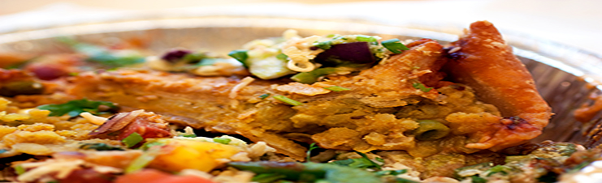

Samosa Chaat
Ingredients
White peas/chick peas (soaked overnight and boiled) - 1/2 cup,
Onion -1,
Tomato -1,
Red chilli powder -1/2 tsp,
Cumin powder -1/2 tsp,
Coriander powder -1/2 tsp,
Chaat Masala -1/2 tsp,
Chana Masala Powder -1/2 tsp,
Samosas -2,
Green/Mint Chutney -1 tbsp,
Sweet/Tamarind Chutney -1tbsp,
Yogurt -2 tbsp,
Oil -1 tsp,
Sev and coriander leaves for garnishing
Heat oil in a pan. Add boiled white/chick peas, half of chopped onion, half of chopped tomato, a pinch of red chilli powder, cumin powder, coriander powder, chaat masala. Add a tablespoon of water and cook for a minute. Now add the samosas and disintegrate them with a spatula and let the edges to still remain crisp. transfer the contents to a bowl and add garnish.